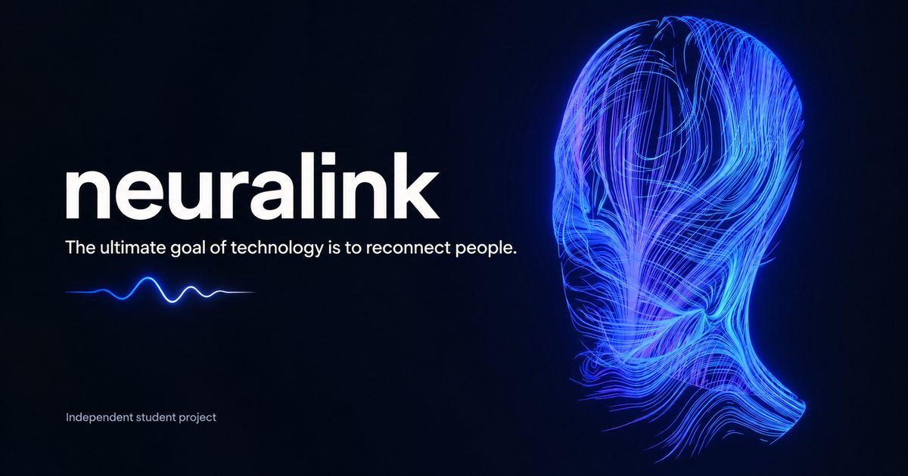

“How can a brain connect to a computer?”
A plain-language introduction to recording, decoding, and output.
Understand the idea →UNDERSTANDING NEURALINK · ONE STEP AT A TIME
Brain-computer interfaces can sound like science fiction. Let's make the idea a little easier to understand.
Whether you are curious about the headlines or exploring the subject with someone you love, start with a question. Explore Neuralink’s ideas in plain language, then follow a recorded speech-decoding trial from Stanford research.
A short, guided experience. No device or account needed.
THE TECHNOLOGY BEHIND THE STORY
This guide focuses on Neuralink’s brain-computer interfaces and speech-restoration research. Explore the ideas here, then check the company’s own information for current study details.
Explore the official Neuralink website ↗An independent guide. Not affiliated with or endorsed by Neuralink.
WHERE WOULD YOU LIKE TO BEGIN?
A plain-language introduction to recording, decoding, and output.
Understand the idea →Follow a real research recording through an interactive 3D journey, from neural activity to decoded words.
Try it for yourself →Original sources and useful questions for your next conversation.
Find your next step →KEEP THE PERSON IN THE PICTURE
Explore the technology with curiosity, while remembering the people and everyday conversations behind it.
